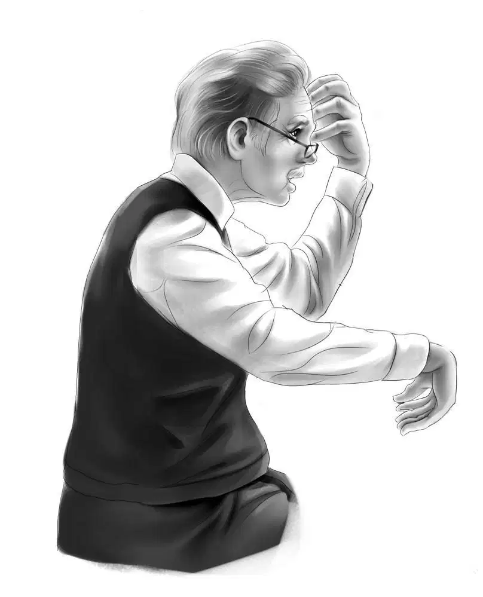
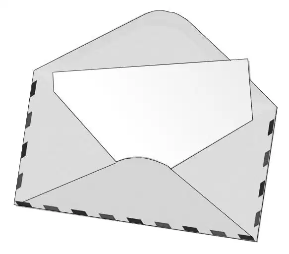
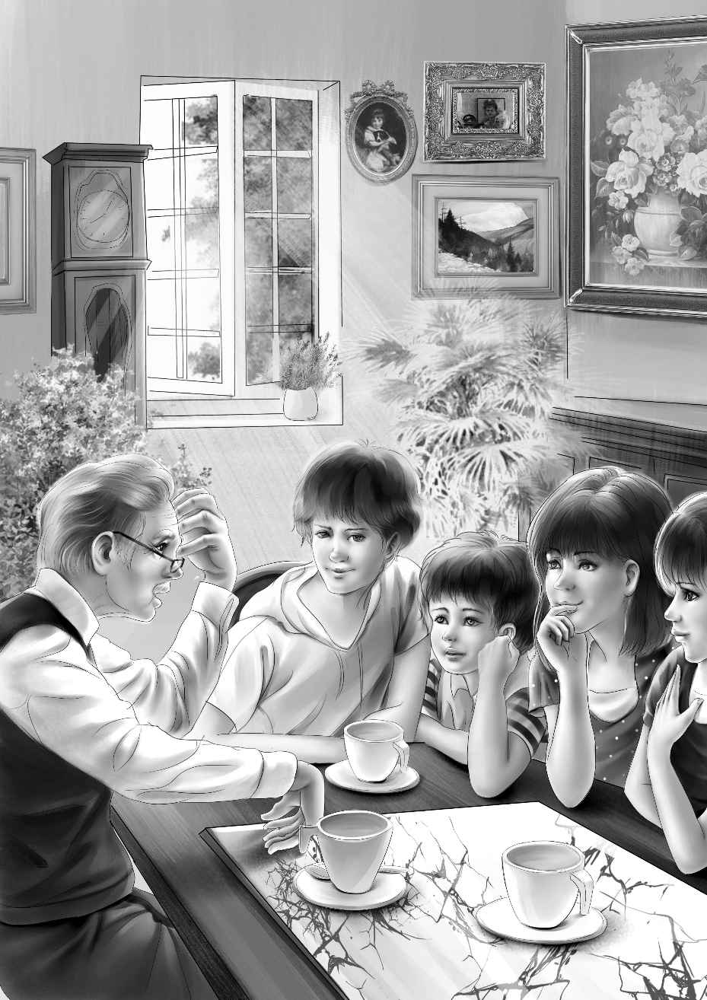
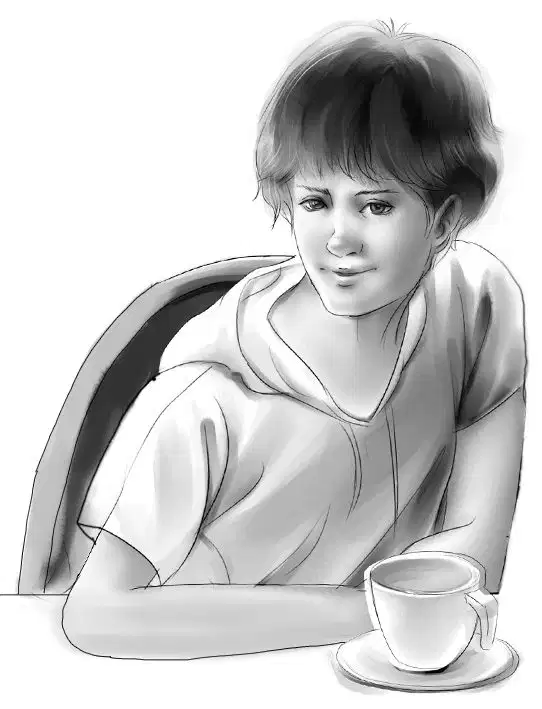
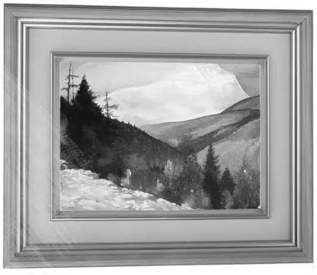
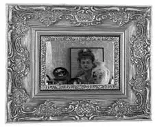

The Alden family was up early on the first day of August. This was the day Mr. Alden was going to tell his four grandchildren about a plan he had made.
When Grandfather came into the dining room for breakfast, Henry, Jessie, Violet, and Benny were waiting.
Henry said, “I’m afraid there is not much time left. Making the tree house for our neighbors took more time than we thought.”
“That’s all right,” Mr. Alden answered, sitting down. “My idea is for a very short trip. It won’t take much time.”
Benny sat down. “Then it is a trip,” he said, smiling to himself.“A trip always means an adventure.”
Jessie and Violet looked at each other.
“You might as well tell us now, Grandfather,” said Jessie. She poured her grandfather’s coffee.
“Thank you, my dear,” said Mr. Alden. He put a lump of sugar into his cup. Benny began to think he could not wait another second. Then Grandfather looked up and smiled.
“Your Aunt Jane wrote to me early this summer,” he said. “She would like to have you all come to see her on the farm. You can stay overnight. Anytime, she said, just let her know when you are coming so she can have plenty for Benny to eat.”
Benny laughed. “Good for Aunt Jane,” he said.
Henry said thoughtfully, “We like the farm, but there aren’t many adventures left there for Benny to work on.”
“No,” agreed Mr. Alden. “That’s why I thought you might like to find a new way to get to Aunt Jane’s.”
“You mean we won’t take the station wagon?” Violet asked.
“We can’t fly there,” Henry said. “It is too short a trip to go by plane.”

Jessie shook her head and said, “Well, how else can we go? I don’t want to walk.”
Benny began to laugh. “I know what you are thinking about, Grandfather,” he said. “We could ride our bikes. It isn’t too far for that.”
“You guessed it,” Mr. Alden agreed. “And who knows? You might ride your bikes right into an adventure.”
“A bicycle adventure!”exclaimed Benny. “That’s different. We wouldn’t just whizz up to the farm in a car. We can take all the old back roads instead of the big highways. We can even take it easy and stay overnight along the way.”
Mr. Alden nodded. “Yes,” he said. “I have thought about that. There are motels where you can stay.”
“That’s wonderful, Grandfather,” Jessie said. “No busy highways with cars racing by.”

“Highways are OK if you’re in a hurry,” said Benny. “But we won’t be in a hurry. We’ll take our time. This will be fun. We can ride about fifty miles a day on our bikes if we have to.”
Violet said,“Will you be all right alone, Grandfather?”
“Of course,” answered Mr. Alden. “I won’t be alone, anyway. I have plenty of people to look out for me. Don’t worry. And remember I will keep Watch. He is too old a dog to run after four bikes.”
“Let’s see,” began Jessie. “We can’t take very much. We need one change of clothes, sweaters, and pajamas.”
“Yes,” agreed Violet. “We can wash things out and let them dry overnight.”
Henry said, “A raincoat would be handy if it rains.”
“And emergency rations,” put in Benny. “It would be awful to have nothing to eat in an emergency.”
Jessie agreed.
“How about sleeping bags?” Benny asked. “Maybe we might have to camp out some night. Or we could sleep in Aunt Jane’s barn—that would be an adventure.”
Jessie looked at Benny and smiled. “All right,”she said. “I don’t think we’ll use them, but we can strap them on the back of our bikes. The other things will fit in our knapsacks.”

“I’ll take a road map,” Henry said.
“Bring your knife with the can opener, Henry,”Jessie suggested.“I think our lunches will be picnics.”
Grandfather smiled to himself as he listened to his grandchildren making their plans.He asked, “When do you want to start?”

Benny laughed. “We’ve been so busy talking about what to take we haven’t planned when to go.”
It was Violet who said,“What about tomorrow morning right after breakfast? We can telephone Aunt Jane and Uncle Andy tonight. Will our trip take about a week, Henry?”
“Not any more than that,” Henry said. “Going and coming.”
Packing did not take much time. After all, there was not much the Aldens were taking with them.
Aunt Jane and Uncle Andy were delighted to hear about the plans for the bike trip. Aunt Jane said she would ask Maggie to cook all the things that Benny liked best.

The next morning the Aldens put their knapsacks on their backs. Everything else went on the carriers. They wheeled their bicycles around to the front door.
Grandfather and Mrs. McGregor, the housekeeper, stood on the front porch. Watch sat at their feet. He seemed to know he was going to stay at home. He did not mind. It was not his idea of fun to run after bicycles.
“Good-bye!” they called. “Don’t worry about us.”
The four Aldens wheeled down the driveway and looked back to wave again. Then they headed toward the river road.
When they were out of sight, Mrs. McGregor turned to go in. She said, “You have four grandchildren to be proud of, Mr. Alden. They know how to get themselves out of trouble without any help.”
“Yes,” agreed Mr. Alden. “They have always solved their own problems, just as they do mysteries. I hope Benny will find an adventure on this trip. But maybe he will run into trouble, too.”
And Mr. Alden was right.